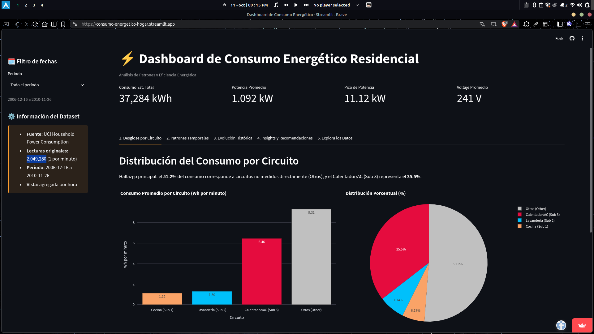

El problema
Entender qué determina el consumo eléctrico de un hogar a lo largo del tiempo, para identificar patrones de horario, estacionalidad y circuitos con mayor impacto, y así encontrar oportunidades reales de optimización energética.
Metodología
Se procesó el dataset original (2006–2010) mediante limpieza de tipos
numéricos, construcción de una columna de fecha/hora, y eliminación de
4,069 filas nulas (0.39% del total), resultando en 2,049,280 registros
limpios. Se creó además una columna de
Other_consumption para capturar el consumo no explicado
por los 3 circuitos de sub-medición del dataset original.
El análisis se dividió en descriptivo (distribución de potencia, voltaje, correlaciones), temporal (por hora, día de la semana, mes y estación), y por sub-medición (cocina, lavandería, calentador/calefacción, y el resto del hogar).
Hallazgos principales
- El horario pico es 19:00–22:00, con el punto máximo de consumo diario a las 20:00 — la franja más costosa del día.
- Fuerte estacionalidad: el invierno incrementa el consumo un 108% frente al verano, y los fines de semana consumen un 25% más que los días laborales.
-
El calentador/calefacción (Sub_metering_3) es el circuito
dominante, y
Other_consumption(zonas no medidas directamente) representa cerca del 70% del consumo total del hogar. - Existen cargas fantasma: se detectó consumo residual constante incluso de madrugada, cuando no debería haber actividad — energía que se está desperdiciando sin que nadie la use activamente.
Recomendaciones
El mayor potencial de ahorro está en optimizar el uso del calentador/calefacción (el circuito de mayor impacto), reducir el consumo en standby de aparatos que generan las cargas fantasma detectadas, y desplazar el uso de electrodomésticos intensivos fuera de la franja pico de 19:00 a 22:00.
Metodología técnica
Ver metodología utilizada
Se cargó el dataset original y se convirtieron las columnas
numéricas a float64, construyendo una columna
Datetime
a partir de los campos de fecha y hora para permitir el análisis
temporal.
Se identificaron y eliminaron 4,069 filas con valores nulos (0.39%
del total), quedando 1,044,506 registros limpios. Se creó además la
columna Other_consumption restando la suma de los 3
circuitos de sub-medición del consumo total, para poder cuantificar
el consumo no explicado directamente por esos circuitos.
El análisis combinó estadística descriptiva (distribución de potencia, voltaje, matriz de correlación), análisis temporal (por hora, día, mes y estación) y comparación entre circuitos de sub-medición para identificar el de mayor impacto.
Proyecto
Proyecto de análisis de consumo energético realizado con Python y Jupyter Notebook.
 Proyecto en análisis de consumo energético
Proyecto en análisis de consumo energético

Proyecto en Streamlit